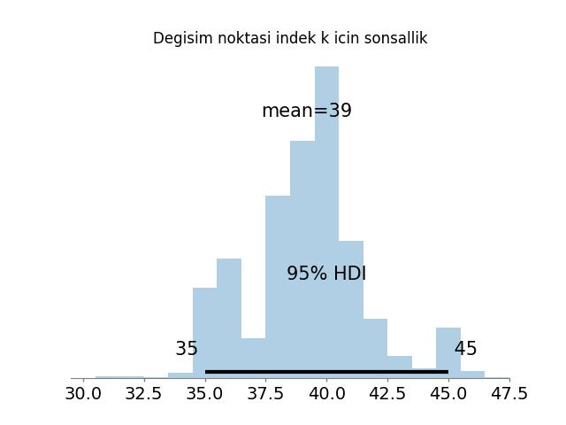

İngiltere’de 1851 ve 1962 yılları arasında kömür madenlerinde olan kazaların sayısı yıllık olarak kayıtlıdır. Acaba bu kazaların dağılımına bakarak, değişimin olduğu seneyi bulabilir miyiz? Böyle bir değişim anı neyi gösterir? Belki madenlerle alakalı regülasyonlarda, denetimlerde bir değişiklik olmuştur, ve kaza oranı azalmıştır [1, 2], [3, sf. 141]. Veriye bakalım.
import pandas as pd
coal = pd.read_csv('coal.txt',header=None)coal.hist(bins=7)
plt.savefig('stat_coal_02.png')
Eğer veride bir değişim noktası var ise, bu durum veride iki fark bölge olduğunu gösterir, ki bu bölgelerin iki farklı dağılımla temsil edileceğini tahmin edebiliriz.
Aynı zaman diliminde vuku bulan olay toplamlarının (event counts)
Poisson dağılımına sahip olduğunu biliyoruz. O zaman, belki de ilk
yapmamız gereken bu veriye iki tane Poisson uydurmak, yani veriyi iki
Poisson dağılımının karışımı olarak temsil etmek. Karışımlar konusu [5]
yazısında görülebilir, buradaki tek fark Bernoulli yerine Poisson
kullanılacak olması. İdeal olarak uydurma operasyonu için
Beklenti-Maksimizasyon (Expectation-Maximization -EM-) kullanılır. Fakat
denklemleri türetmek zaman alabilir, biz şuradaki tavsiyeyi [4, sf. 11]
takip ederek bu örnek için uydurmayı bir gayrı lineer optimizasyon
paketi lmfit ile yapacağız (tavsiyenin R kodu
coal.r içinde).
from scipy.stats.distributions import poisson
from lmfit import Parameters, minimize
from lmfit.printfuncs import report_fit
def f(pars,x):
m1 = pars['m1'].value
lam1 = pars['lam1'].value
lam2 = pars['lam2'].value
model = m1*poisson(lam1).pmf(x) + (1-m1)*poisson(lam2).pmf(x)
return model
def residual(pars,y,x):
return -np.log(f(pars,x).T[0])
fit_params = Parameters()
fit_params.add('m1', value=0.5, min=0,max=1.)
fit_params.add('lam1', value=1.0, min=1.,max=7.)
fit_params.add('lam2', value=2.0, min=2.,max=7.)
out = minimize(residual, fit_params, args=(coal,coal,))
report_fit(fit_params)[[Variables]]
m1: 0.50000000 (init = 0.5)
lam1: 1.00000000 (init = 1)
lam2: 2.00000000 (init = 2)Sonuçlar yaklaşık \(\lambda_1=1,\lambda_2=3\) (tam sayıya yuvarladık, çünkü olay sayısı tam sayı olmalı). Bu iki dağılımı verinini normalize edilmiş histogramı üzerinde gösterirsek,
from scipy.stats.distributions import poisson
coal.hist(bins=7,density=True)
p = poisson(1.0)
x = np.arange(1,10)
plt.plot(x, p.pmf(x))
p = poisson(3.0)
plt.plot(x, p.pmf(x))
plt.savefig('stat_coal_03.png')
Peki bu bulguyu şimdi değişim noktası keşfine nasıl çevireceğiz? Dikkat, üstteki iki dağılımın ayrıldığı \(\lambda\) anı değil aradığımız, verideki senesel akış içinde hangi sene sonrası bir dağılımın diğerinin yerine geçtiği.
Şöyle bir yaklaşım olabilir mi acaba: bir döngü içinde potansiyel ayraç noktası olabilecek tüm seneler için veriyi iki parçaya ayırırız. Sıfır hipotezi nedir? Bu veri parçaları üstteki bulduğumuz Poisson dağılımlarından geliyor. O zaman şöyle devam ederiz: Üstteki optimizasyondan elimizde her iki dağılımın beklentisi, yani \(\lambda\) değerleri var, ve Poisson dağılımlarının bir avantajı beklentisinin ve varyansının aynı olması! Şimdi, eğer her iki parçanın sayısal ortalamasını ve sıfır hipoteze göre bilinen \(\mu,\sigma^2\) (her ikisi de \(\lambda\)) üzerinden standardize edersek, yani \(N(0,1)\) haline getirirsek, elimize iki tane \(N(0,1)\) geçer, diyelim ki \(Z_1,Z_2\). Bunların karelerinin toplamının chi kare olacağını biliyoruz. Sıfır hipotezine göre böyle olmalı. O zaman bundan “sapma’’ sıfır hipotezinden ne kadar uzaklaşıldığını gösterir, bu bağlamda en yüksek p-değerini veren ayraç noktası bize değişim anını verir.
Daha detaylı matematiği vermek gerekirse; Merkezi Limit Teori’sine göre birbirinden bağımsız, aynı dağılımlı \(X_1,..,X_n\)’in, ki her birinin beklentisi \(E(X_i) = \mu\) ve varyansı \(Var(X_i)=\sigma^2\), o zaman sayısal ortalama \(\bar{X}\) üzerinden, ve \(n \to \infty\)
\[ Z = \frac{\bar{X} - \mu }{\sigma \sqrt{n}} \]
yani standard normal \(Z \sim N(0,1)\). Daha önce belirttiğimiz gibi Poisson için \(\mu = \sigma^2\).
Gerekli olan diğer teori: \(\chi_{n}^2 \sim Z_1^2 + ... + Z_n^2\), yani \(n\) tane standart normalın toplamı yaklaşık olarak serbestlik derecesi \(n\) olan chi kare dağılımı. Bu iki bilgiyi yan yana koyarsak, ve üstte bahsettiğimiz döngüyü yazarsak,
from scipy.stats import chi2
# buyuk olan lambda degerini ilk parca icin kullaniyoruz, cunku
# test ettigimiz kaza oranlarinin once fazla sonra az olmasi
lam1 = 3.; lam2 = 1.
dof = 2
res = []
cutoffs = range(20,80)
for cutoff in cutoffs:
p1 = coal[0:cutoff]; p2 = coal[cutoff+1:]
z1 = (p1.mean()-lam1) / lam1*np.sqrt(len(p1))
z2 = (p2.mean()-lam2) / lam2*np.sqrt(len(p2))
chi = z1**2+z2**2
res.append(float(1-chi2.cdf(chi,dof)))
print (1851 + cutoffs[np.array(res).argmax()])1885Tarihten biliyoruz ki değişimin sebebi büyük ihtimalle İngiltere’de 1887 yılında kanunlaşan Kömür Madenleri Yasası’dır [3]. Yakınlık fena değil.
Ödev: Verinin iki tane Poisson karışımıyla temsil edilmesi gerektiğinden emin olmak istiyorsak, AIC kullanarak tek Poisson uyumu, daha sonra karışımın uyumu için ayrı ayrı AIC’leri hesaplayarak hangisinin daha düşük olduğuna göre bu kararı verebiliriz.
Bir değişik yöntem Bayes yaklaşımını kullanarak ve hesapsal olarak Markov Chain Monte Carlo (MCMC) tekniği. Kazaların sayısının tümünü iki Poisson dağılımının ortak dağılımı (joint distribution) üzerinden modelleyeceğiz, ve bu dağılımların birinci Poisson’dan ikincisine geçtiği anı hesaplamaya uğraşacağız.
Poisson dağılımı
\[ p(y|\theta) = \frac{e^{-\theta}\theta^y}{y!} \]
Eldeki n tane veri noktası \(y=y_0, y_1,...,y_n\)’nin hep birlikte \(\theta\) ile tanımlı bir Poisson dağılımından gelip gelmediğinin ne kadar mümkün olduğu (likelihood) hesabı şöyledir:
\[ p(y|\theta) = \frac{e^{-n\theta}\theta^{\sum y_i}}{\prod y_i!} \]
Formülün bölünen kısmındaki tüm y noktaları toplanıyor, bölen kısminde ise tüm y değerleri teker teker faktoryel hesabı sonrası birbiri ile çarpılıyor.
Şimdi yukarıdaki \(\theta\) değişkeni de noktasal bir değer yerine bir “dağılıma”, mesela \(\theta\) Gamma dağılımına sahip olabilirdi: \(Gamma(\alpha, \beta)\). Formülde \(\alpha\), \(\beta\) sabit değerlerdir (fonksiyon değişkeni değil). Gamma olasılık formülü şöyledir:
\[ p(\theta) = \frac{\beta^\alpha}{\Gamma(\alpha)}\theta^{\alpha-1}e^{-\beta\theta} \]
O zaman \(p(y|\theta)\) formülünü bulmak için Bayes teorisini kullanmamız gerekecekti. Bayes teorisi bilindiği gibi
\[ p(\theta|y) = \frac{p(y|\theta)p(\theta)}{p(y)} \]
\[ p(\theta|y) \propto p(y|\theta)p(\theta) \]
İkinci formüle dikkat, eşitlik yerine orantılı olma (proportional to) işaretini kullanıyor. Sebep: bölen kısmındaki p(y)’yi kaldırdık, sonuç olarak soldaki \(p(\theta|y)\) değeri artık bir dağılım değil – bu bir bakımdan önemli ama örnekleme amacı için bir fark yaratmıyor, basitleştirme amacıyla bunu yaptık, böylece \(p(y)\)’yi hesaplamamız gerekmeyecek, ama örnekleme üzerinden diğer tüm hesapları hala yapabiliriz. Tamam.
Şimdi Bayes Teorisini Gamma önsel (apriori) ve Poisson olurluğu (likelihood) üzerinden kullanırsak,
\[ p(\theta|y) = \frac{\beta^\alpha}{\Gamma(\alpha)} \theta^{\alpha-1}e^{-\beta\theta} \times \frac{e^{-n\theta}\theta^{\sum y}}{\prod y!} \]
Benzer terimleri yanyana getirelim:
\[ p(\theta|y) = \frac{\beta^\alpha}{\Gamma(\alpha)\prod y!} \theta^{\alpha-1}\theta^{\sum y}e^{-\beta\theta} e^{-n\theta} \]
Şimdi sol taraftaki bölümü atalım; yine üsttekine benzer numara, bu kısım gidince geri galan dağılım olamayacak, ama ona “oranlı” başka bir formül olacak.
\[ p(\theta|y) \propto \theta^{\alpha-1}\theta^{\sum y}e^{-\beta\theta} e^{-n\theta} \]
\[ \propto \theta^{\alpha-1+\sum y}e^{-(\beta+n)\theta} \]
Bu dağılım nedir? Formülün sağ tarafı Gamma dağılımının formülüne benzemiyor mu? Evet, formülün sağ tarafı \(Gamma(\alpha+\sum y, \beta + n)\) dağılımı, yani ona orantılı olan bir formül. Yani Bayes teorisi üzerinden şunu anlamış olduk; eğer önsel dağılım Gamma ise, Poisson mümkünlük bizi tekrar Gamma sonuç dağılımına götürüyor. Gamma’dan başlayınca tekrar Gamma’ya ulaşıyoruz. Bu bir rahatlık, bir kolaylık, bir matematiksel numara olarak kullanılabilir. Sonsal (posterior) dağılımların şekli, hesaplanma, cebirsel işlemler açısından önemli, eğer temiz, kısa, öz olurlarsa hesap işlerimiz kolaylaşır.
Not: Hatta üzerinde çalıştığımız problem sebebiyle eğer Poisson mümkünlük olacağını biliyorsak, sadece bu sebeple bile önsel dağılımı, üstteki kolaylık bilindiği için, özellikle Gamma seçebiliriz, çünkü biliriz ki Gamma ile başlarsak elimize tekrar Gamma geçecektir.
Şimdi kömür madeni verisine gelelim. Bu madendeki kazaların sayısının Poisson dağılımından geldiğini öne sürüyoruz, ve kazaların “iki türlü” olduğunu bildiğimizden hareketle, birinci tur kazaların ikinci tur kazalardan değişik Poisson parametresi kullandığını öne süreceğiz.
O zaman değişim anını, değişim senesini nasıl hesaplarız?
Kazaların ilk k senede ortalama \(\theta\) ile, ve k ve n arasındaki senelerde ortalama \(\lambda\) Poisson ile dağıldığını söyleyelim: Yani
\[ Y_i = Poisson(\theta) \qquad i=1,..,k \]
\[ Y_i = Poisson(\lambda) \qquad i=k+1,..,n \]
Burada \(Y_i\) sene i sırasında olan kazaların sayısını belirtiyor. Bayes kuralını hatırlarsak \(\theta\) ve \(\lambda\) parametrelerine önsel dağılım atayacağız. Bu dağılım Gamma olacak. Yani \(\theta \sim Gamma(a_1, b_1)\) ve \(\lambda \sim Gamma(a_2, b_2)\).
Ayrıca k değerini de bilmiyoruz, k değeri yani “değişim noktası” Poisson dağılımların birinden ötekine geçtiği andır. Bu seneyi bulmaya çalışıyoruz. Şimdi tüm verinin, tüm seneleri kapsayacak şekilde modelini kurmaya başlayalım. k parametresinin aynen öteki parametreler gibi bir önsel dağılımı olacak (ki sonradan elimize k için de bir sonsal dağılımı geçecek), ama bu parametre elimizdeki 112 senenin herhangi birinde “eşit olasılıkta” olabileceği için onun önsel dağılımı Gamma değil \(k \sim Unif(1,112)\) olacak. Yani ilk başta her senenin olasılığı birbiriyle eşit, her sene \(\frac{1}{112}\) olasılık değeri taşıyor.
Bu modelin tamamının olurluğu nedir?
\[ L(\theta, \lambda, k | y) = \frac{1}{112} \times \displaystyle \prod_{i=1}^k \frac{e^{-\theta}\theta^{y_i}}{y_i!} \times \displaystyle \prod_{i=k+1}^n \frac{e^{-\lambda}\lambda^{y_i}}{y_i!} \]
Sonsal geçişini yapınca yukarıda olduğu gibi Gamma dağılımlarını elde ederiz:
\[ L(\theta, \lambda, k | y) \propto \theta^{a_1-1+\sum_{i=1}^{k} y_i}e^{-(b_1+k)\theta} \lambda^{a_2-1+\sum_{i=k+1}^n y_i}e^{-(b_2+n-k)\lambda} \]
\(\frac{1}{112}\)’yi bir sabit olduğu için formülden attık, bu durum orantılı hali etkilemiyor. Üstteki formül içindeki Gamma dağılımlarını görebiliyoruz, hemen yerlerine koyalım:
\[ L(\theta, \lambda, k | y) \propto Gamma(a_1 + \sum_{i=1}^{k} y_i, b_1+k) \ Gamma(a_2 + \sum_{i=k+1}^{n} y_i, b_2+n-k) \]
Gibbs örneklemeye gelelim. Bu örneklemeye göre şartsal dağılım (conditional distribution) formülü bulunmaya uğraşılır, hangi değişkenlerin verili olduğuna göre, o değişkenler sabit kabul edilebilir, ve orantısal formülden atılabilir. Bu her değişken için teker teker yapılır.
Sonra hesap sırasında her şartsal dağılıma teker teker zar attırılır, ve elde edilen değer, bu sefer diğer şartsal dağılımlara değer olarak geçilir. Bu işlem sonuca erişilinceye kadar özyineli (iterative) olarak tekrar edilir (mesela 1000 kere). O zaman,
\[ \theta | Y_1,..,Y_n,k \sim Gamma(a_1 + \sum_{i=1}^{k} y_i, b_1+k) \]
\[ \lambda | Y_1,..,Y_n,k \sim Gamma(a_2 + \sum_{i=k+1}^{n} y_i, b_2+n-k) \]
\[ p(k | Y_1,..,Y_n) \propto \theta^{\sum_{i=1}^{k} y_i}e^{-k\theta} \lambda^{\sum_{i=k+1}^n y_i}e^{k\lambda} \]
En son formülde içinde k olan terimleri tuttuk, gerisini attık. Formül \(e\) terimleri birleştirilerek biraz daha basitleştirilebilir:
\[ p(k | Y_1,..,Y_n) \propto \theta^{\sum_{i=1}^{k} y_i} \lambda^{\sum_{i=k+1}^n y_i}e^{(\lambda-\theta)k} \]
Bir basitleştirme daha şöyle olabilir
\[ K = \sum_{i=1}^{k} y_i \]
\[ \lambda^{\sum_{i=k+1}^n y_i} = \lambda^{\sum_{i=1}^n y_i - \sum_{i=1}^k y_i} \]
Üstel işlemlerde eksi işareti, üstel değişken ayrılınca bölüm işlemine dönüşür:
\[ = \frac{\lambda^{\sum_{i=1}^n y_i}}{\lambda ^{\sum_{i=1}^k y_i}} \]
\[ = \frac{\lambda^{\sum_{i=1}^n y_i}}{\lambda ^{K}} \]
\[ p(k | Y_1,..,Y_n) \propto \theta^{K} \frac{\lambda^{\sum_{i=1}^n y_i}}{\lambda ^{K}} e^{(\lambda-\theta)k} \]
\[ = \bigg(\frac{\theta}{\lambda}\bigg)^{K} \lambda^{\sum_{i=1}^n y_i} e^{(\lambda-\theta)k} \]
\(\lambda^{\sum_{i=1}^n y_i}\) terimi \(k\)’ye değil \(n\)’ye bağlı olduğu için o da final formülden atılabilir
\[ p(k | Y_1,..,Y_n) \propto \bigg(\frac{\theta}{\lambda}\bigg)^{K} e^{(\lambda-\theta)k} \]
\(p(k)\) için ortaya çıkan bu formüle bakarsak, elimizde verilen her k değeri için bir olasılık döndürecek bir formül var. Daha önceki Gamma örneğinde formüle bakarak elimizde hemen bir Gamma dağılımı olduğunu söyleyebilmiştik. Bu kodlama sırasında işimize yarayacak bir şeydi, hesaplama için bir dağılıma “zar attırmamız” gerekiyor, ve Gamma örneğinde hemen Python Numpy kütüphanesindeki random.gamma çağrısına Gamma’dan gelen rasgele sayılar ürettirebiliriz. Üstteki formüle bakarsak, hangi dağılıma zar attıracağız?
Cevap şöyle: \(p(k|..)\) pdf
fonsiyonundaki k değişkeni \(1,..,119\)
arasındaki tam sayı değerleri alabilir, o zaman ortada bir ayrıksal
(discrete) dağılım var demektir. Ve her k noktası için olabilecek
olasılık değerini üstteki \(p(k|..)\)
formülüne hesaplattırabiliyorsak, ayrıksal bir dağılımı her nokta için
üstteki çağrı, ve bu sonuçları normalize ederek (vektörün her elemanını
vektörün toplamına bölerek) bir dağılım şekline dönüştürebiliriz. Daha
sonra bu “vektörsel dağılım” üzerinden zar attırırız. Python kodundaki
w_choice ya da R dilindeki sample çağrısı bu
işi yapar.
import math
import random
np.random.seed(0); random.seed(0)
# samples indexes from a sequence of probability table
# based on those probabilities
def w_choice(lst):
n = random.uniform(0, 1)
for item, weight in enumerate(lst):
if n < weight:
break
n = n - weight
return item
#
# hyperparameters: a1, a2, b1, b2
#
def coal(n,x,init,a1,a2,b1,b2):
nn=len(x)
theta=init[0]
lam=init[1]
k = init[2]
z=np.zeros((nn,))
for i in range(n):
ca = a1 + sum(x[0:k])
theta = np.random.gamma(ca, 1/float(k + b1), 1)
ca = a2 + sum(x[(k+1):nn])
lam = np.random.gamma(ca, 1/float(nn-k + b2), 1)
for j in range(nn):
z[j]=math.exp((lam-theta)*(j+1)) * (theta/lam)**sum(x[0:j])
# sample
zz = z / sum(z)
k = w_choice(zz)
print (float(theta), float(lam), float(k))
data = np.loadtxt("coal.txt")
coal(1100, data, init=[1,1,30], a1=1,a2=1,b1=1,b2=1)3.3256136945319414 0.9318211379358856 42.0Kodları işletince elimize k = 42 değeri geçecek, yani değişim anı 1851+42 = 1893 senesidir.
PyMC ile kurulan model, daha önce el ile yazılmış Gibbs örnekleyicisiyle aynı Bayesyen değişim noktası (changepoint) formülasyonunu yeniden üretmektedir. Her iki yaklaşımda da veri, yıllık kömür madeni kazası sayılarından oluşur ve bu sayılar tek bir değişim noktasına sahip Poisson süreci olarak modellenir.
Burada \(\theta\) ve \(\lambda\) sırasıyla değişim noktasından önce ve sonra geçerli olan Poisson oranlarıdır. \(k\) ise değişim noktasının konumudur. Parametreler için öncül dağılımlar bağımsız alınmıştır: \(\theta\) ve \(\lambda\) için Gamma öncülleri, \(k\) için ise tüm olası yıllar üzerinde birörnek (uniform) ayrık bir öncül kullanılmıştır.
El kodlu Gibbs örnekleyicisinde, her iterasyonda tam koşullu dağılımlardan örnekleme yapılmıştır:
\(\theta\) ve \(\lambda\), Poisson–Gamma eşlenik yapısı sayesinde koşullu Gamma dağılımlarından örneklenmiştir,
\(k\) ise her olası konum için koşullu olasılıklar hesaplanarak bu olasılıklara göre rastgele seçilmiştir.
Bu yaklaşım, koşullu dağılımların analitik biçimde elde edilmesine ve bu dağılımlar arasında dönüşümlü örnekleme yapılmasına dayanıyordu.
PyMC ile kurulan modelde ise aynı yapının tamamı sembolik olarak tanımlanmıştır. Bu tanımlama sonrasında PyMC, ek bir kodlama gerektirmeden ortak olasılık (joint posterior) dağılımını kendisi kurar. Örnekleme aşamasında ise sürekli parametreler \(( \theta, \lambda )\) için NUTS (No-U-Turn Sampler), ayrık değişken \(k\) için ise Metropolis algoritmasını otomatik olarak kullanır. Böylece, Gibbs örnekleyicisinde elle yapılan koşullu örnekleme işlemleri PyMC tarafından dahili olarak yürütülür.
import pymc as pm
import arviz as az
data = np.loadtxt("coal.txt", dtype=int)
n = len(data)
years = 1851 + np.arange(n) # for reporting results
# hiperparametreler
a1 = a2 = 1.0
b1 = b2 = 1.0
with pm.Model() as model:
# Iki Poisson orani icin onseller
theta = pm.Gamma("theta", alpha=a1, beta=b1) # before the changepoint
lam = pm.Gamma("lam", alpha=a2, beta=b2) # after the changepoint
# Degisim noktasi k icin ayriksal birornek onsel (indeks in 0..n-1)
k = pm.DiscreteUniform("k", lower=0, upper=n - 1)
idx = np.arange(n) # numpy array of shape (n,)
mu = pm.math.switch(idx <= k, theta, lam)
y = pm.Poisson("y", mu=mu, observed=data)
graphviz = pm.model_to_graphviz(model)
graphviz.graph_attr.update(dpi="300")
graphviz.render("stat_coal_04", format="jpg")
nuts = pm.NUTS(vars=[theta, lam], target_accept=0.9)
metro = pm.Metropolis(vars=[k])
trace = pm.sample(
draws=3000,
tune=2000,
step=[nuts, metro],
random_seed=42,
return_inferencedata=True
)
print(az.summary(trace, var_names=["theta", "lam", "k"], round_to=3))
k_samples = trace.posterior["k"].values.flatten().astype(int)
k_mode = np.bincount(k_samples).argmax()
print(f"Sonsal modal k indeksi = {k_mode}, sene = {1851 + k_mode}")
# plot posterior of k
plt.figure()
az.plot_posterior(trace, var_names=["k"], hdi_prob=0.95)
plt.title("Degisim noktasi indek k icin sonsallik")
plt.savefig('stat_coal_01.jpg')
Step Grad Acce… Sam…
Pro… Dra… Div… size eva… Tun… Sca… Rate Spe… Elap… Rem…
-----------------------------------------------------------------------------
5000 0 1.0… 3 Fal… 4.59 0.30 141… 0:00… 0:0…
dra…
5000 0 0.9… 3 Fal… 4.29 0.28 132… 0:00… 0:0…
dra…
5000 0 1.0… 7 Fal… 4.29 0.12 131… 0:00… 0:0…
dra…
5000 0 0.9… 7 Fal… 4.72 0.00 120… 0:00… 0:0…
dra…
mean sd hdi_3% hdi_97% ... mcse_sd ess_bulk ess_tail r_hat
theta 3.062 0.284 2.524 3.579 ... 0.002 7874.187 8317.128 1.000
lam 0.923 0.115 0.716 1.145 ... 0.001 7809.059 7082.257 1.000
k 39.162 2.423 34.000 43.000 ... 0.045 1977.323 1858.838 1.004
[3 rows x 9 columns]
Sonsal modal k indeksi = 40, sene = 1891
Elde edilen sonuçlar yorum bakımından tamamen aynıdır: değişim noktası için ardıl dağılım yaklaşık olarak 1891 yılına karşılık gelir; \(\theta\) ve \(\lambda\) için ardıl ortalamalar sırasıyla yaklaşık 3.06 ve 0.92 olarak bulunmuştur. Bu sonuçlar, el ile yazılmış Gibbs örnekleyicisinde elde edilen klasik kömür madeni kazası analizi sonuçlarıyla örtüşmektedir.
Fark esasen uygulamadadır: PyMC modeli aynı Bayesyen yapıyı çok daha kısa, okunabilir bir şekilde ifade eder; örnekleme, yakınsama tanısı ve ardıl tahmin (posterior predictive) işlemleri ise otomatik olarak ve güvenilir biçimde yürütülür.

Kaynaklar
[1] Ioana A. Cosma, Ludger Evers, Markov Chain Monte Carlo Methods (Lecture)
[2] Koop, Bayesian Econometric Methods
[3] Anderson, A. (1911). Labour legislation. In H. Chisholm (Ed.), Encyclopedia britannica (11th ed., Vol. 16, sf. 7-28)
[4] Zuccini, Hidden Markov Models for Time Series An Introduction Using R
[5] Bayramlı, Istatistik, Çok Değişkenli Bernoulli Karışımı
[6] Bayesian estimation of changepoints, https://ruivieira.dev/bayesian-estimation-of-changepoints.html
[7] Coal-Mine Accidents: Their Causes and Prevention, https://pubs.usgs.gov/bul/0333/report.pdf